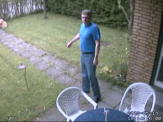

sudo apt-get install motion
wget https://github.com/Motion-Project/motion/releases/{deb package name}
sudo apt-get install gdebi-core
sudo gdebi {deb package name}
sudo apt-get install autoconf automake build-essential pkgconf libtool libzip-dev
libjpeg-dev git libavformat-dev libavcodec-dev libavutil-dev libswscale-dev libavdevice-dev
cd ~
git clone https://github.com/Motion-Project/motion.git
cd motion
autoreconf -fiv
./configure
make
make install
sudo pkg install autoconf pkgconf automake gmake git ffmpeg
cd ~
git clone https://github.com/Motion-Project/motion.git
cd motion
autoreconf -fiv
./configure
gmake
gmake install
sudo brew install ffmpeg pkg-config libjpeg
cd ~
git clone https://github.com/Motion-Project/motion.git
cd motion
autoreconf -fiv
./configure
make
make install
sudo apt-get install autoconf automake build-essential pkgconf libtool git libzip-dev libjpeg-dev
sudo apt-get install libavformat-dev libavcodec-dev libavutil-dev libswscale-dev libavdevice-dev
sudo apt-get install mysql-server libmysqlclient-dev
or (depends upon your distribution and version)
sudo apt-get install default-libmysqlclient-dev
sudo apt-get install libpq-dev
sudo apt-get install libsqlite3-dev
sudo apt-get install libjpeg-turbo8 libjpeg-turbo8-dev
sudo apt-get install libwebp-dev
sudo zypper install autoconf automake libtool git
sudo zypper install --type pattern devel_basis
sudo zypper install libjpeg8-devel
sudo zypper install -t pattern devel_C_C++
sudo zypper ar -f -n packman-essentials http://packman.inode.at/suse/openSUSE_13.1/Essentials/ packman-essentials
sudo zypper ar -f -n packman-multimedia http://packman.inode.at/suse/openSUSE_13.1/Multimedia/ packman-multimedia
sudo zypper install libffmpeg-devel
Not known by author
Not known by author
Not known by author
sudo zypper install libwebp-devel
sudo pkg install autoconf pkgconf automake gmake git
sudo pkg install ffmpeg
sudo pkg install mysql57-client
sudo pkg install postgresql95-contrib
sudo pkg install sqlite3
sudo pkg install v4l_compat webcamd
sudo pkg install libwebp
sudo kldload bktr_mem.ko
sudo kldload bktr.ko
sudo sysctl hw.bt848.card=1 ( Miro pctv )
sudo sysctl hw.bt848.tuner=10 ( PHILIPS_FR1216_PAL )
sudo sysctl hw.bt848.format=0 ( PAL )
bktr_mem_load="YES" in /boot/loader.confbktr_load="YES" in /boot/loader.confhw.bt848.card=1 in /etc/sysctl.confhw.bt848.tuner=10 in /etc/sysctl.confhw.bt848.format=0 in /etc/sysctl.confsudo yum groupinstall 'Development Tools'
sudo yum install libjpeg-turbo libjpeg-turbo-devel
sudo yum install libzip-devel
sudo yum localinstall --nogpgcheck https://download1.rpmfusion.org/free/el/rpmfusion-free-release-7.noarch.rpm https://download1.rpmfusion.org/nonfree/el/rpmfusion-nonfree-release-7.noarch.rpm
sudo yum install ffmpeg ffmpeg-devel
Not known by author
Not known by author
sudo yum install sqlite-devel
Not known by author
brew upgrade ffmpeg pkg-config jpeg
brew install ffmpeg pkg-config libjpeg
autoreconf
If the 'configure' file exists and contains a valid script, the tool will return immediately since no additional work
needs to be completed. If the script needs updating, then it will take a moment to return. Once it has been executed,
a file called 'configure' will exist in the directory. Note that if the command is run as
autoreconf -f
The -f parameter instructs it to force a new configure file to be created. This can be preferable in certain
situations so that the configure script gets updated with the correct version number.
Once the 'configure' file is created, we can execute it. What the script does is interrogate the system and look
for all the needed items in order to compile Motion. In this process it looks to determine which optional components
have been installed on the system and if found sets flags to indicate for them to be included. If a particular library
is required by Motion and is not found, the configure script will issue an error. The error means that the library was
not found because it was either not installed or that it was installed into a location that the script could not find.
With the Motion configure script, once it has ended it also lists out all of the optional components that were located.
Note that if you KNOW that a particular component is installed yet the configure script reports it as not installed, then
it may be necessary to use one or more of the configure options described below to tell the script where to find
the particular component.
To run the configure your current directory must be the motion directory. You type
./configure
You can add the parameter ./configure --help to get help on the different switches.
When the configure script finishes you should validate that the options desired
were correctly identified by the configure. In particular, the ffmpeg option is occasionally not
found even if it is actually installed. Various users have indicated this to be a particular
problem with the PI. If using a PI and have this issue, you can use the following option
./configure --with-ffmpeg=/usr/lib/arm-linux-gnueabihf
For a long term option, you can edit the file
$HOME/.bashrc
and within it place the following two lines at the end
PKG_CONFIG_PATH=/usr/lib/arm-linux-gnueabihf:$PKG_CONFIG_PATH
export PKG_CONFIG_PATH This option will however only become
effective the next time you open the terminal shell.
The following options can be specified with the configure script to customize
how Motion is built.
| Options | Description Defaults for the options are specified in brackets [ ] |
Editors comment |
| -h, --help | display this help and exit | |
| --help=short | display options specific to this package | This command shows the options special to Motion. |
| --help=recursive | display the short help of all the included packages | |
| -V, --version | display version information and exit | Provides the version number of the source code and autotools |
| -q, --quiet, --silent | do not print `checking...' messages | Illustrates only the results of the script. |
| --cache-file=FILE | cache test results in FILE. [disabled] | No function |
| -C, --config-cach | alias for `--cache-file=config.cache' | No function |
| -n, --no-create | do not create output files | Used for testing if other switches produce error - without writing anything to the disk |
| --srcdir=DIR | find the sources in DIR. [configure dir or `..'] | DIR is a directory path. |
| Installation directories: | ||
| --prefix=PREFIX | install architecture-independent files in PREFIX [/usr/local] |
The default /usr/local means that
The executable binary "motion" is installed in /usr/local/bin The manual page in /usr/local/man/man1 The document files in /usr/local/docs/motion The configuration file in /usr/local/etc/motion The example config files in /usr/local/motion/examples If you are experimenting with many parallel versions it may be desirable to set the PREFIX to e.g. /usr/local/motion and then add /usr/local/motion/bin to your search path (or simply cd /usr/local/motion/bin before execution). This way you can change version just by changing the symbolic link in /usr/local/motion. If you are installing the software on a machine where you do not have access to the /usr/local but have write access to a home directory, then you should change this to point to a directory within your home tree. Example: --prefix=$HOME |
| --exec-prefix=EPREFIX | install architecture-dependent files in EPREFIX [PREFIX] |
This defines an alternative installation directory for the executable binary. Note: The executable binary will be placed in a directory "bin" below the directory specified by this option Author recommends leaving this as default (i.e. not setting it). |
| --bindir=DIR | user executables [EPREFIX/bin] | With this option you can control exactly which directory the executable binary is installed. The previous option automatically adds the bin directory. Here you are in full control of the directory. |
| --sbindir=DIR | System admin executables [EPREFIX/sbin] | Not used by Motion. |
| --libexecdir=DIR | program executables [EPREFIX/libexec] | Not used by Motion. |
| --datadir=DIR | read-only architecture-independent data [PREFIX/share] | Not used by Motion. |
| --sysconfdir=DIR | read-only single-machine data [PREFIX/etc] |
This is where Motion both installs the default configuration file and also where it will later search for it. Motion searches for the configuration file "motion.conf" in the following order: 1. Current directory from where Motion was invoked 2. $HOME/.motion 3. The motion subdirectory inside the sysconfig directory set by this switch. If not defined the default is /usr/local/etc/ Editor recommends leaving this at default. Be careful if you run "make install" again. This will overwrite the motion-dist.conf file that you may have edited. |
| --sharedstatedir=DIR | modifiable architecture-independent data [PREFIX/com] | Not used by Motion. |
| --localstatedir=DIR | modifiable single-machine data [PREFIX/var] | Not used by Motion. |
| --libdir=DIR | object code libraries [EPREFIX/lib] | Not used by Motion. |
| --includedir=DIR | C header files [PREFIX/include] | Not used by Motion. |
| --oldincludedir=DIR | C header files for non-gcc [/usr/include] | Not used by Motion. |
| --infodir=DIR | info documentation [PREFIX/info] | Not used by Motion. |
| --mandir=DIR | man documentation [PREFIX/man] | Editor recommends the default. |
| Optional Packages: | ||
| --without-bktr | Exclude bktr video subsystem devices | ONLY used in *BSD |
| --without-v4l2 | Exclude using v4l2 (video4linux2) subsystem. Makes Motion so it only supports network cameras. | Can be used if you do not need support or lack some of the libraries for it. |
| --with-webp | Compile with webp image support | |
| --with-ffmpeg=DIR | Specify the path for the directory prefix in which the
library and headers are installed.
If not specified configure will search in /usr/ and /usr/local/ |
DIR is the directory PREFIX in which
the ffmpeg shared libraries and their headers are installed.
If you install ffmpeg from sources and use the default directories or if ffmpeg is installed as a binary package (RPM or deb) you may not need to specify the directory prefix. Configure should find the libraries automatically. If you installed ffmpeg from sources and specified a different --prefix when building f fmpeg you must use the same value for the DIR ( --with-ffmpeg=DIR) or export that location to be included in the PKG_CONFIG_PATH The option of --with-ffmpeg is the default for Motion. If the required libraries are not located, the configure script will stop at the ffmpeg section and report which libraries need to be installed. Once the required libraries are installed, run the script again. As noted previously, make sure to install the -dev versions. For more information on FFmpeg see the documentation for the FFmpeg project. |
| --without-ffmpeg | Do not compile with ffmpeg | Use this if you do not want to compile with ffmpeg. If ffmpeg is not installed you must specify this option for Motion to build without ffmpeg. |
| --without-mysql | Do not compile with MySQL support | Use this if you do not want to include MySQL support in the package. This can also be useful if you get compilation errors related to MySQL and you actually do not need the feature anyway. |
| --without-pgsql | Do not compile with PostgreSQL support | Use this if you do not want to include PostgreSQL support in the package. This can also be useful if you get compilation errors related to PostgreSQL and you actually do not need the feature anyway. |
| --without-sqlite3 | Disable sqlite3 support in motion. | Use this if you do not want to include SQLite3 support in the package. This can also be useful if you get compilation errors related to SQLite3 and you actually do not need the feature anyway. |
| --without-optimizecpu | Exclude autodetecting platform and cpu type. This will disable the compilation of gcc optimizing code by platform and cpu. | Use this if the optimization causes problems. Not typically needed. |
| --with-developer-flags | Add additional warning flags for the compiler. | This option is for developers only. It checks to ensure that the code is robust. |
make For FreeBSD distributions use gmake
The makefile will go through each of the files and compile them. Depending upon the source code obtained, there may be
warnings or usually none.
If the notifications indicate undefined references, then it is most likely that
an additional library needs to be added in via the configure switches. Many of these additional missing libraries
issues may be related to the version of ffmpeg and how it was built or installed. The following is a sample of some
of the extra ffmpeg libraries that may need to be added to pkg-config .pc files that are
located in the ffmpeg /lib/pkgconfig directory.
-lavformat -lswscale -lavcodec -lavutil -lfdk-aac -lswresample -lm -lopus -lz -lva -lvpx -lx264 -lmp3lame -lbz2 -ldl -lvorbisenc -lvorbis -ltheoraenc -ltheoradec
Once the makefile has completed correctly, it will report 'build complete'.
If you have run make before, you should run a make clean before
running make again. This cleans out all the object files that were
generated the previous time you ran make. If you do not run make clean first
before you rebuild Motion you may not get the additional feature included.
For example: If you built Motion without ffmpeg support and then add it later and rebuild Motion
without running make clean first the ffmpeg feature does not get compiled into the Motion binary.
The first time you build Motion run ./configure, make, make install.
If you need to build it again (to run with different configure options) run ./configure,
make clean, make, make install.
make install to install the files. For FreeBSD systems, use
gmake install
These commands create the required directories and copy the files into the following locations. (default directories):
make uninstall
And delete the base installation directory in /usr/local and any link pointing to it. If you have forgotten where
you installed it or someone else did it for you, simply search for the files and directories starting with Motion.
If the filenames and the directories match the names described in the "Make Install" section of this document, you
can safely delete them.
make,
make install and
make uninstall has already been described above.
make clean before you run make if you change the configuration (like adding features such as ffmpeg) and rebuild motion.-c pathname Motion will expect the config file to be as specified. When you specify the config file on the command line with -c you can call it anything.
If you do not specify -c or the filename you give Motion does not exist, Motion will search for the configuration file called 'motion.conf' in the following order:
videodevice /dev/video0
stream_port 8081
camera1.conf:
videodevice /dev/video1
stream_port 8082
Motion reads its configuration parameters in the following sequence. If the same
parameter exists more than one place the last one read wins
motion [ -hbnsm ] [ -c config file path ] [ -d level ] [ -k level ] [ -p process_id_file ] [ -l log_file ]
kill -s SIGHUP pid, where the last parameter is the process ID which
you get by typing ps -ef ¦ grep motion. The PID is the first on the
list which is the parent process for the threads.
Motion responds to the following signals:
| Signal | Description | Editors comment |
|---|---|---|
| SIGHUP | The config file will be reread. | This is a very useful signal when you experiment with settings in the config file. |
| SIGTERM | If needed motion will create an movie file of the last event and exit | |
| SIGUSR1 | Motion will create an movie file of the current event. |
input must be set to the value -1 for USB cameras.
Network cameras are set up via the
netcam_url parameter.
The latest versions of Motion support rtsp format which many cameras now stream.
The URL connection string to enter is specific to the camera and is
usually provided by the manufacturer. The connection string is the same as what would be used by other
video playing software such as VLC. If the camera does not stream via RTSP and instead uses a MJPEG, then Motion
can also view that format. See the option netcam_url
for additional options.
Raspberry Pi cameras can be set up two different ways. If Motion is installed by using the
apt packages (e.g. apt-get install motion), then the camera must be set up using the bcm2835-v4l2 module which creates
a v4l2 device for the camera. Users will need to install this module using the
command sudo modprobe bcm2835-v4l2. This
will set up the camera as a normal v4l2 device and it can be accessed via a standard /dev/videoX device. If Motion is
built from source or installed via the deb packages on the project release page, then an additional option is to set
up the camera using the mmalcam_name parameter or using
the bcm2835-v4l2 module. When Motion is installed via apt, the mmalcam option is not available.
Composite video cards are normally made with a chip called BT878 (older cards have a BT848). They
all use the Linux driver called 'bttv'.
There are cards with more then one video input but still only one BT878 chip. They have a video multiplexer which
input is selected with the config option input. Input channel numbers start at 0
(which is why the value -1 and not 0 disables input selection). There are video capture cards available
with 4 or 8 inputs but only one chip. They present themselves as one single video device and
you select input using the 'input' option. If you define e.g. 4 camera config files with the
same video device name but different input numbers Motion automatically
goes into round robin mode.
Many TV tuner cards have the input channels: TV Tuner = 0, Standard composite video = 1, S-VHS = 3.
Others have TV=0, composite video 1= 1, composite video = 2, S-VHS = 3.
For video capture cards input 1 is normally the composite video input.
Some capture cards are specially made for surveillance with for example 4 inputs.
Others have a TV tuner, a composite input and perhaps also a S-Video input.
For all these cards the inputs are numbered. The numbering varies from card to card so the easiest
is to experiment with a program such as VLC that can show the video stream.
If you use the TV tuner input you also need to set the frequency of the TV channel using the
option frequency. Otherwise
set frequency to 0.
Finally you need to set the TV norm.
Values: 0 (PAL), 1 (NTSC), 2 (SECAM), 3 (PAL NC no colour). Default is 0 (PAL).
If your camera is a PAL black and white you may get a better result with norm=3 (PAL no colour).
Static files can also be processed with a bit of additional setup via a v4l2loopback device.
Install the loopback software as described in the
Output - Pipe Options
section of this guide to create a /dev/videoX device and then use software such as ffmpeg to stream
the static file into the v4l2 device. e.g.
ffmpeg -re -i mymovie.mp4 -f v4l2 /dev/video0 Then in a separate terminal, start Motion
with it set to use the /dev/video0 device as input. This method can can also be used to
reformat the content to a different format. The following outputs the original movie into a gray pixel format.
ffmpeg -re -i mymovie.mp4 -f v4l2 -pix_fmt gray /dev/video0
This can be helpful as a interim process where ffmpeg supports a particular input but that format is not yet supported
by Motion.
| Version 3.2 | Version 3.4 | Version 4.0 | Current Version |
| area_detect | area_detect | area_detect | area_detect |
| auto_brightness | auto_brightness | auto_brightness | auto_brightness |
| brightness | brightness | brightness | brightness |
| thread | thread | camera | camera |
| camera_dir | camera_dir | ||
| camera_id | camera_id | ||
| camera_name | camera_name | ||
| contrast | contrast | contrast | contrast |
| daemon | daemon | daemon | daemon |
| database_busy_timeout | database_busy_timeout | database_busy_timeout | |
| mysql_db | database_dbname | database_dbname | database_dbname |
| pgsql_db | database_dbname | database_dbname | database_dbname |
| mysql_host | database_host | database_host | database_host |
| pgsql_host | database_host | database_host | database_host |
| mysql_password | database_password | database_password | database_password |
| pgsql_password | database_password | database_password | database_password |
| pgsql_port | database_port | database_port | database_port |
| database_type | database_type | database_type | |
| mysql_user | database_user | database_user | database_user |
| pgsql_user | database_user | database_user | database_user |
| despeckle | despeckle_filter | despeckle_filter | despeckle_filter |
| output_all | emulate_motion | emulate_motion | emulate_motion |
| gap | event_gap | event_gap | event_gap |
| exif_text | exif_text | exif_text | |
| extpipe | extpipe | extpipe | |
| ffmpeg_bps | ffmpeg_bps | ffmpeg_bps | ffmpeg_bps |
| ffmpeg_duplicate_frames | ffmpeg_duplicate_frames | ffmpeg_duplicate_frames | |
| ffmpeg_cap_motion | ffmpeg_output_debug_movies | ffmpeg_output_debug_movies | ffmpeg_output_debug_movies |
| ffmpeg_cap_new | ffmpeg_output_movies | ffmpeg_output_movies | ffmpeg_output_movies |
| ffmpeg_variable_bitrate | ffmpeg_variable_bitrate | ffmpeg_variable_bitrate | ffmpeg_variable_bitrate |
| ffmpeg_video_codec | ffmpeg_video_codec | ffmpeg_video_codec | ffmpeg_video_codec |
| flip_axis | |||
| framerate | framerate | framerate | framerate |
| frequency | frequency | frequency | frequency |
| height | height | height | height |
| hue | hue | hue | hue |
| input | input | input | input |
| ipv6_enabled | ipv6_enabled | ipv6_enabled | |
| lightswitch | lightswitch | lightswitch | lightswitch |
| locate | locate_motion_mode | locate_motion_mode | locate_motion_mode |
| locate_motion_style | locate_motion_style | locate_motion_style | |
| log_level | log_level | log_level | |
| log_type | log_type | log_type | |
| logfile | logfile | logfile | |
| mask_file | mask_file | mask_file | mask_file |
| mask_privacy | |||
| max_mpeg_time | max_movie_time | max_movie_time | max_movie_time |
| minimum_frame_time | minimum_frame_time | minimum_frame_time | minimum_frame_time |
| minimum_motion_frames | minimum_motion_frames | minimum_motion_frames | minimum_motion_frames |
| mmalcam_control_params | mmalcam_control_params | ||
| mmalcam_name | mmalcam_name | ||
| motion_video_pipe | motion_video_pipe | motion_video_pipe | motion_video_pipe |
| movie_filename | movie_filename | movie_filename | movie_filename |
| netcam_highres | |||
| netcam_keepalive | netcam_keepalive | netcam_keepalive | netcam_keepalive |
| netcam_proxy | netcam_proxy | netcam_proxy | netcam_proxy |
| netcam_tolerant_check | netcam_tolerant_check | netcam_tolerant_check | netcam_tolerant_check |
| netcam_url | netcam_url | netcam_url | netcam_url |
| netcam_userpass | netcam_userpass | netcam_userpass | netcam_userpass |
| noise_level | noise_level | noise_level | noise_level |
| noise_tune | noise_tune | noise_tune | noise_tune |
| norm | norm | norm | norm |
| on_area_detected | on_area_detected | on_area_detected | on_area_detected |
| on_camera_lost | on_camera_lost | on_camera_lost | on_camera_lost |
| on_camera_found | |||
| on_event_end | on_event_end | on_event_end | on_event_end |
| on_event_start | on_event_start | on_event_start | on_event_start |
| on_motion_detected | on_motion_detected | on_motion_detected | on_motion_detected |
| on_movie_end | on_movie_end | on_movie_end | on_movie_end |
| on_movie_start | on_movie_start | on_movie_start | on_movie_start |
| on_picture_save | on_picture_save | on_picture_save | on_picture_save |
| output_motion | output_debug_pictures | output_debug_pictures | output_debug_pictures |
| output_normal | output_pictures | output_pictures | output_pictures |
| jpeg_filename | picture_filename | picture_filename | picture_filename |
| ppm | picture_type | picture_type | picture_type |
| post_capture | post_capture | post_capture | post_capture |
| power_line_frequency | power_line_frequency | power_line_frequency | |
| pre_capture | pre_capture | pre_capture | pre_capture |
| process_id_file | process_id_file | process_id_file | process_id_file |
| quality | quality | quality | quality |
| quiet | quiet | quiet | quiet |
| rotate | rotate | rotate | rotate |
| roundrobin_frames | roundrobin_frames | roundrobin_frames | roundrobin_frames |
| roundrobin_skip | roundrobin_skip | roundrobin_skip | roundrobin_skip |
| rtsp_uses_tcp | rtsp_uses_tcp | rtsp_uses_tcp | |
| saturation | saturation | saturation | saturation |
| setup_mode | setup_mode | setup_mode | setup_mode |
| smart_mask_speed | smart_mask_speed | smart_mask_speed | smart_mask_speed |
| snapshot_filename | snapshot_filename | snapshot_filename | snapshot_filename |
| snapshot_interval | snapshot_interval | snapshot_interval | snapshot_interval |
| sql_log_mpeg | sql_log_movie | sql_log_movie | sql_log_movie |
| sql_log_image | sql_log_picture | sql_log_picture | sql_log_picture |
| sql_log_snapshot | sql_log_snapshot | sql_log_snapshot | sql_log_snapshot |
| sql_log_timelapse | sql_log_timelapse | sql_log_timelapse | sql_log_timelapse |
| sql_query | sql_query | sql_query | sql_query |
| sql_query_start | |||
| stream_auth_method | stream_auth_method | stream_auth_method | |
| stream_authentication | stream_authentication | stream_authentication | |
| webcam_limit | stream_limit | stream_limit | stream_limit |
| webcam_localhost | stream_localhost | stream_localhost | stream_localhost |
| webcam_maxrate | stream_maxrate | stream_maxrate | stream_maxrate |
| webcam_motion | stream_motion | stream_motion | stream_motion |
| webcam_port | stream_port | stream_port | stream_port |
| stream_preview_newline | stream_preview_newline | stream_preview_newline | |
| stream_preview_scale | stream_preview_scale | stream_preview_scale | |
| webcam_quality | stream_quality | stream_quality | stream_quality |
| substream_port | |||
| switchfilter | switchfilter | switchfilter | switchfilter |
| target_dir | target_dir | target_dir | target_dir |
| text_changes | text_changes | text_changes | text_changes |
| text_double | text_double | text_double | text_double |
| text_event | text_event | text_event | text_event |
| text_left | text_left | text_left | text_left |
| text_right | text_right | text_right | text_right |
| threshold | threshold | threshold | threshold |
| threshold_tune | threshold_tune | threshold_tune | threshold_tune |
| ffmpeg_video_codec | ffmpeg_video_codec | ffmpeg_video_codec | timelapse_codec |
| timelapse_filename | timelapse_filename | timelapse_filename | timelapse_filename |
| timelapse_fps | |||
| ffmpeg_timelapse | ffmpeg_timelapse | ffmpeg_timelapse | timelapse_interval |
| ffmpeg_timelapse_mode | ffmpeg_timelapse_mode | ffmpeg_timelapse_mode | timelapse_mode |
| track_auto | track_auto | track_auto | track_auto |
| track_iomojo_id | track_iomojo_id | track_iomojo_id | track_iomojo_id |
| track_maxx | track_maxx | track_maxx | track_maxx |
| track_maxy | track_maxy | track_maxy | track_maxy |
| track_motorx | track_motorx | track_motorx | track_motorx |
| track_motory | track_motory | track_motory | track_motory |
| track_move_wait | track_move_wait | track_move_wait | track_move_wait |
| track_port | track_port | track_port | track_port |
| track_speed | track_speed | track_speed | track_speed |
| track_step_angle_x | track_step_angle_x | track_step_angle_x | track_step_angle_x |
| track_step_angle_y | track_step_angle_y | track_step_angle_y | track_step_angle_y |
| track_stepsize | track_stepsize | track_stepsize | track_stepsize |
| track_type | track_type | track_type | track_type |
| tunerdevice | tunerdevice | tunerdevice | tunerdevice |
| use_extpipe | use_extpipe | use_extpipe | |
| v4l2_palette | v4l2_palette | v4l2_palette | v4l2_palette |
| video_pipe | video_pipe | video_pipe | video_pipe |
| videodevice | videodevice | videodevice | videodevice |
| control_authentication | webcontrol_authentication | webcontrol_authentication | webcontrol_authentication |
| control_html_output | webcontrol_html_output | webcontrol_html_output | webcontrol_html_output |
| control_localhost | webcontrol_localhost | webcontrol_localhost | webcontrol_localhost |
| webcontrol_parms | |||
| control_port | webcontrol_port | webcontrol_port | webcontrol_port |
| width | width | width | width |
| ffmpeg_deinterlace | -Depreciated | -Depreciated | -Depreciated |
| sdl_threadnr | sdl_threadnr | -Depreciated |
| daemon | process_id_file | setup_mode | logfile |
| log_level | log_type | camera | camera_id |
| camera_name | camera_dir |
| videodevice | v4l2_palette | tunerdevice | input |
| norm | frequency | power_line_frequency | auto_brightness |
| brightness | contrast | saturation | hue |
| roundrobin_frames | roundrobin_skip | switchfilter |
| netcam_url | netcam_userpass | netcam_keepalive | netcam_proxy |
| netcam_tolerant_check | rtsp_uses_tcp | netcam_highres |
| rotate | width | height | framerate |
| minimum_frame_time | despeckle_filter | locate_motion_mode | locate_motion_style |
| text_left | text_right | text_changes | text_event |
| text_double | flip_axis |
| emulate_motion | threshold | threshold_tune | noise_level |
| noise_tune | area_detect | mask_file | mask_privacy |
| smart_mask_speed | lightswitch | minimum_motion_frames | event_gap |
| on_event_start | on_event_end | on_picture_save | on_motion_detected |
| on_area_detected | on_movie_start | on_movie_end | on_camera_lost |
| on_camera_found |
| output_pictures | output_debug_pictures | quality | picture_type |
| snapshot_interval | snapshot_filename | picture_filename | exif_text |
| %Y | year | %m | month | %d | day |
| %H | hour | %M | minute | %S | second |
| %T | HH:MM:SS | %v | event | %q | frame number |
| %t | camera id number | %D | changed pixels | %N | noise level |
| %i | width of motion area, | %J | height of motion area | %J | height of motion area |
| %K | X coordinates of motion center | %L | Y coordinates of motion center | %C | value defined by text_event |
| %f | filename with full path | %n | number indicating filetype | %$ | camera name |
| %{host} | name of computer running Motion | %{fps} | current frames per second | %{dbeventid} | See sql_query_start |
| V4l2 Option | FOURCC | v4l2_palette option |
| V4L2_PIX_FMT_SN9C10X | S910 | 0 |
| V4L2_PIX_FMT_SBGGR16 | BYR2 | 1 |
| V4L2_PIX_FMT_SBGGR8 | BA81 | 2 |
| V4L2_PIX_FMT_SPCA561 | S561 | 3 |
| V4L2_PIX_FMT_SGBRG8 | GBRG | 4 |
| V4L2_PIX_FMT_SGRBG8 | GRBG | 5 |
| V4L2_PIX_FMT_PAC207 | P207 | 6 |
| V4L2_PIX_FMT_PJPG | PJPG | 7 |
| V4L2_PIX_FMT_MJPEG | MJPG | 8 |
| V4L2_PIX_FMT_JPEG | JPEG | 9 |
| V4L2_PIX_FMT_RGB24 | RGB3 | 10 |
| V4L2_PIX_FMT_SPCA501 | S501 | 11 |
| V4L2_PIX_FMT_SPCA505 | S505 | 12 |
| V4L2_PIX_FMT_SPCA508 | S508 | 13 |
| V4L2_PIX_FMT_UYVY | UYVY | 14 |
| V4L2_PIX_FMT_YUYV | YUYV | 15 |
| V4L2_PIX_FMT_YUV422P | 422P | 16 |
| V4L2_PIX_FMT_YUV420 | YU12 | 17 |
| V4L2_PIX_FMT_Y10 | Y10 | 18 |
| V4L2_PIX_FMT_Y12 | Y12 | 19 |
| V4L2_PIX_FMT_GREY | GREY | 20 |
| V4L2_PIX_FMT_H264 | H264 | 21 |
input or frequency options to change camera.
If multiple cameras use the same video device, they each can capture roundrobin_frames number of frames before having
to share the device with the other cameras.
Round Robin is not relevant for Network cameras or standard USB web cameras. It is used with video capture
cards which have multiple inputs per video chip. This is not the ideal way to run multiple cameras.
When the capture card changes input it takes some time before the decoder chip has synchronized to the new camera.
You can improve this if you have expensive cameras with a synchronized input. Only one camera can be decoded
at a time so if you have 4 cameras connected 3 of the cameras will need to wait for their
turn. The fact that cameras have to take turns and the fact that you have to skip a few frames after
each turn dramatically lowers the possible framerate. You can get a high framerate by viewing each
camera for a long time. But then you may miss the action on one of the inactive cameras. If you can
afford it avoid Round Robin and buy the more expensive type of capture cards that has one decoder chip
per input. If you only need 2 or 3 cameras you can also simply put 2 or 3 cheap TV cards in the computer.
Linux has no problem working with multiple TV cards. (or better yet, it multiple cheap network cameras)
If multiple cameras use the same video device, they each can capture
roundrobin_frames number of frames
before having to share the device with the other cameras.
When another camera wants to watch another input or frequency or size the first
roundrobin_skip number of frames are skipped to allow the
device to settle. The last option switchfilter is supposed
to prevent the change of camera from being detected
as Motion. Its function is not perfect and sometimes prevents detection of real motion. You should start
with having the option disabled and then try with the option enabled to see if you can skip less frames
without loosing the detection of the type of motion you normally want to detect.
ffplay -f mjpeg http://{yourip}.
In certain situations, this option may result in better results than using the http protocol.
Motion will ignore the netcam_keepalive and netcam_tolerant_check options when this format is specified.
/home/user/test/currentimage.jpg and a script
running external to Motion would loop through all the images and copy them into currentimage.jpg.
v4l2:///dev/video0 Internally, this
is equivalent to running the following from the command line ffplay -f v4l2 /dev/video0
Since this is not the preferred method of specifying a v4l2 device, many of the usual v4l2 controls such as
hue, brightness, etc as well as other netcam options are ignored.
The options width, height as well as two of
the v4l2_palette can be used. The two options
for v4l2_palette which can be used are option 8 (V4L2_PIX_FMT_MJPEG) and
option 21 (V4L2_PIX_FMT_H264). If any other option is selected for the v4l2_palette
Motion will revert to the camera default.
|
|
|
rotate or flip_axis options, note that the mask is
applied after the rotation.
Detailed Description
The mask file must be a pgm format image file (portable gray map). Note that you must choose the BINARY format.
To use this feature create an image of exact the same size as the ones you get from your camera.
Then make it purely white for the areas you want detected and
black for the areas you want ignored. You can also make gray areas where
you want to lower the sensitivity to motion. Normally you will stick to pure black and white.
One method for generating the mask file is as follows.
Take a motion captured picture, edit it with black and white for the mask and export it as a pgm file.
with a program such as gimp.
If you cannot save in this format save as a grayscale jpg and then you can convert it to pgm format with
djpeg -grayscale -pnm [inputfile] > mask.pgm
(assuming you have djpeg installed - part of the jpeg lib package).
Note that the mask file option masks off the detection of motion. The entire picture is still shown on the picture.
This means that you cannot use the feature to mask off an area that you do not want people to see. Instead
use the mask_privacy option.
Below are an example of a webcam picture and a mask file to prevent the detection cars in the street.
Normal picture. Notice the street is visible through the hedge.

Mask file (converted to png format so it can be shown by your web browser)
setup_mode.
That way you can
easily adjust smart_mask_speed.
The mask_file option provides a static mask to turn off sensitivity in certain areas.
This is very useful to mask a street with cars passing by all day long etc...
But imagine a scenario with large bushes and big trees where all the leaves are moving
in the wind also triggering motion from time to time even with despeckle turned on. Of
course you can also define a static mask here, but what if the bushes are growing during
spring and summer? Well, you have to adapt the mask from time to time. What if the camera
position moves slightly? What if someone grows new plants in your garden? You always have to setup a new static mask.
The answer to this problem is the smart mask feature A dynamic, self-learing mask.
Smart mask will disable sensitivity in areas with frequent motion (like trees in the wind).
Sensitivity is turned on again after some time of no more motion in this area. The built mask
is a bit larger at the borders than the actual motion. This way smartmask works more reliably
when sudden moves occur under windy conditions.
mkv:h265
sudo modprobe v4l2loopback. This will add a new video device that you
can use for the loopback. It is believed that there are additional options associated with the
v4l2loopback that allows for adding more than one device. See the documentation of the v4l2loopback
project for additional details.
To activate the vloopback device in Motion set the 'video_pipe' option in the motion.conf file to the
device name associated with the one created by v4l2loopback.
sudo modprobe -r v4l2loopback
The second type of pipe available in Motion is the extpipe. This option sets up a pipe to which it sends
images which can then be picked up by external recording applications.
<html>
<body bgcolor=000000>
<img src=http://yourmotionpc:yourstreamport/ border="0" width=25%></a>
</body>
</html>
Change the yourmotionpc with the IP or name of the computer running Motion. Also revise the port
number to be the one referenced for the stream.
Save the file and then open it in your browser.
It may also be possible to view the stream via regular stream players such as VLC, mplayer, ffplay, avplay, etc.
by specifying the network stream as
http://localhost:myportnumber/stream.mjpg
Motion can be remote controlled via the simple http interface.
Some Motion configuration options can be changed while Motion is running while others require
that the options be saved and Motion be restarted.
The most obvious tool to use to remote control Motion is any web browser.
All commands are sent using the http GET method which simply means that the information is
sent via the URL and maybe a query string. You can use any browser (Firefox, Mozilla, Internet Explorer
, etc). You can also use the text based browser lynx to control Motion from a console.
It navigates fine through the very simple and minimalistic http control interface of Motion.
But it is probably simpler to connect to the control port with a browser, navigate to the function
you want, and copy the URL from the browser URL entry line.
If your webcontrol_port is 8080 and you browse from the same machine
on which Motion runs simply look up
http://localhost:8080/ and navigate around.
Connecting from a remote machine can be done by using a domain name (example
http://mydomain.com:8080/) or the
IP address of the machine (example
http://192.168.1.4:8080/).
The option webcontrol_localhost must be off to allow connection from a remote machine.
If you want to use a script or cron to automatically change Motion settings while Motion runs you use a
program that can fetch a webpage. We simply just throw away the html page that Motion returns. Programs
commonly available on Linux machines are wget and lwp-request. Here is an example of how to start and
stop motion detection via cron. These two lines are added to /etc/crontab.
0 9 * * * root /usr/bin/lwp-request http://localhost:8080/0/detection/start > /dev/null 0 18 * * * root /usr/bin/lwp-request http://localhost:8080/0/detection/pause > /dev/nullIf you want to use the http remote control from your own software (for example your own PHP front end) you can set the motion.conf option webcontrol_html_output off. Then Motion answers back with very basic text only without html around it. To remote control Motion from a web pages you can for example use PHP. In PHP it takes this simple code line to send a remote commend to Motion. Here we pause motion detection for camera 2
readfile('http://localhost:8080/2/detection/pause');
ALERT! Security Warning! This feature also means you have to pay attention
to the following.
mysql_insert_id is then
executed to provide the key back into the dbeventid specifier.
The dbeventid specifier can then be used in the sql_query as a parameter
to that query for inserting into the table.
Although this query is run for all the different database options, the dbeventid is
only set for mysql databases. For the other databases, the dbeventid is always set
to zero.
You can use Conversion Specifiers within the query.
Sample Query
insert into security_events(camera, event_time_stamp) values('%t', '%Y-%m-%d %T')"